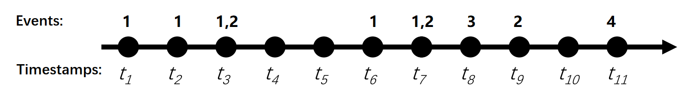

Mining Episode Rules in a Complex Sequence with the Non-Overlapping Frequency using the NONEPI algorithm (SPMF documentation)
This example explains how to run the NONEPI algorithm using the SPMF open-source data mining library.
How to run this example?
- If you are using the graphical interface, (1) choose the "NONEPI" algorithm, (2) select the input file "contextEMMA.txt", (3) set the output file name (e.g. "output.txt") (4) set the minimum support to 1, and the minimum confidence to 0.2 (which means 20%), and then (5) click "Run algorithm".
- If you want to execute this example from the command line,
then execute this command:
java -jar spmf.jar run NONEPI contextEMMA.txt output.txt 2 0.2
in a folder containing spmf.jar and the example input file contextEMMA.txt. - If you are using the source code version of SPMF, launch
the file "MainTestPOERM.java" or "MainTestPOERM-ALL.java" in the package ca.pfv.SPMF.tests.
What is NONEPI?
NONEPI (Ouarem et al, 2021) is an algorithm for discovering episode rules in a complex event sequence. In simple words, the algorithm is used to analyze a sequence of symbols or events that has timestamps. The output is some rules of the form X-->Y indicating that if some sequence of event(s) or symbol(s) X appear in the sequence, they will be followed by some other sequence of event(s) or symbol(s) Y. Finding such rule is useful to discover some sequential or temporal relationships in a sequence. For example, it can be used to analyze the purchase behavior of a customer (a sequence of purchases), or it could be used to find relationships between some words in a text (a sequence of words).
Various algorithms have been proposed to find episode rules.Diifferent algorithms may use different ways of counting how many times a rule appears in a sequence. The NONEPI algorithm is special in that it uses the non-overlapping frequency. The non-overlapping frequency means that NONEPI counts only the occurrences of a rule that are non overlapping in a sequence and ignore others. This can have some advantages for some applications.
What is the input?
The algorithm takes as input an event sequence with a minimum support threshold, amd a mininum confidence threshold. Let’s consider following sequence consisting of 11 time points (t1, t2, …, t10) and 4 events type (1, 2, 3, 4). This database is provided in the text file "contextEMMA.txt" in the package ca.pfv.spmf.tests of the SPMF distribution.
Time points |
Itemset (event set) |
1 |
1 |
2 |
1 |
3 |
1 2 |
6 |
1 |
7 |
1 2 |
8 |
3 |
9 |
2 |
11 |
4 |
Each line of the sequence is called an event set and consists of:
- a time point (first column)
- an event set (second column)
For example, in the above example, at time point 1, the event 1 occurred. Then at time point 2, the event 1 occurred again. Then at time point 3, the events 1 and 2 occurred simultaneously. And so on.
To make it easier to understand, we could also represent the above sequence visually like this:

What is the output?
The output of NONEPI is the set of episode rules having a support (occurrence frequency) that is no less than a minSup threshold (a positive integer) set by the user, and a confidence that is no less than a minimum confidence threshold (a double number representing a percentage).
A rule is denoted as X --> Y and it is a relationship between two sequence of events (episodes) X and Y. The intuitive meaning of a rule X--> Y is that if the sequence of events X appear in a sequence, they will be followed by a sequence of events Y.
The support of a rule X-->Y means how many times the rule appeared in the input sequence (how many times X was followed by Y.. For example, if a rule appears three times, we will say that the support of the rule is 3.
The confidence of a rule X-->Y means how many times X-->Y appeared in the input sequence, divided by how many times X appeared in the input sequence. Thus, you can think about the confidence as the conditional probability P(Y|X), that is how likely it is that Y will follow X in the sequence. The confidence is expressed as a percentage. For example, a confidence of 50% means that 50% of the times X was followed by Y in the input sequence.
The output of the algorithm is all the episode rules that (1) have a confidence greater or equal to the minConf parameter, and (2) a support greater or equal to the minSup parameter.
It is to be noted that NONEPI uses the non-overlapping support. Thus, to calculate the support and confidence of rules, overlapping occurrences are not counted. See the research paper for a formal explanation of non overlapping ocurrences. .
Now, let's look at the result for the above example, if we set minsup = 2 and minconf = 0.2 (20 %). One rule is found:
Episode rules |
Support | Confidence |
{1} ==> {1}{1 2} |
3 | 0.667 (which means 66.7%) |
Input file format
The input file format of that algorithm is a text file. An item (event) is represented by a positive integer. A transaction (event set) is a line in the text file. In each line (event set), items are separated by a single space. It is assumed that all items (events) within a same transaction line) are sorted according to a total order (e.g. ascending order) and that no item can appear twice within the same event set. Each line is optionally followed by the character "|" and then the timestamp of the event set (line).
In the previous example, the input file is defined as follows. The two first lines are metadata indicating the type of file and the source of the data.
@FILETYPE="Transaction database with timestamps"
@SOURCE="SPMF SOFTWARE https://philippe-fournier-viger.com/spmf/"
1|1
1|2
1 2|3
1|6
1 2|7
3|8
2|9
4|11
Output file format
The output file format is defined as follows. It is a text file. Each line is an episode rule. Each event in an episode rule is a positive integer On each line, the items from the rule antecedent are first listed, separated by single spaces. Then the keyword "==>" appears, followed by the items from the rule consequent, separated by single spaces. Then, the keyword "#SUP:" appears followed by an integer indicating the support of the rule as a number of occurrences. Then, the keyword "#CONF:" appears followed by a double values in the [0, 1] interval indicating the confidence of the rule (e.g. 0.5 means 50%). The output for the example is:
@FILETYPE="Episode rules"@SOURCE="SPMF SOFTWARE https://philippe-fournier-viger.com/spmf/"
{1} ==> {1}{1 2} #SUP: 3 #CONF: 0.6666667
The first two lines are metadata indicating the type of patterns in this file and the source of the data. Then the following lines provide the list of patterns. Consider the first line. It indicates that the rule {1, 2} ==> {1} has a support of 2 (it appears twice in the input sequence) and that the confidence of this rule is 50%. The next lines follow the same format
Performance
This is the original implementation of NONEPI.
Where can I get more information about the algorithm?
The NONEPI algorithm is described in this article:
Ouarem, O., Nouioua, F., Fournier-Viger, P. (2021). Mining Episode Rules From Event Sequences Under Non-Overlapping Frequency. Proc. 34th Intern. Conf. on Industrial, Engineering and Other Applications of Applied Intelligent Systems (IEA AIE 2021), Springer LNAI, pp. 73-85.